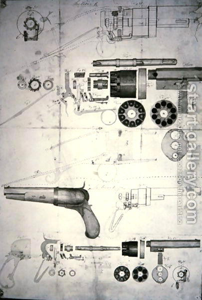

[9th_law__innovation]
back to top...
When dogma becomes an impediment to the achievement of your objectives, perhaps it is time to shoot your dog.
Learning and innovation go hand in hand. The arrogance of success is to think that what you did yesterday will be sufficient for tomorrow. William Pollard.
The engineering equivalent of dogma are specifications and standards. The religious equivalent is orthodoxy. All have their place in education and as a storehouse for knowledge. All have their failing in a universal resistance to change, growth, evolution, and improvement. As an engineer the most important part of the design and build process is the test. In nature the test is that of survival. In religion the test is ones ability to commune with God. In software the test is the unit test, a programmatic testing of all interfaces and boundary conditions of an object.
Hell, there are no rules here - we're trying to accomplish something. Thomas A. Edison.
Standards have their place in the specification of best practice and in the initial phase of a design, but when they impede the achievement of business objectives they should be scrutinized critically.
Any intelligent fool can make things bigger, more complex, and more violent. It takes a touch of genius - and a lot of courage to move in the opposite direction. E.F. Schumacher.
Dogma is not a deliverable except when your are teaching a class. Standards are not a deliverable except when your are selling processes. If your deliverable is an object that is expected to meet business requirements and to be delivered on time and with a minimal number of defects, at some point you may have to make the decision to shoot your proverbial dog. This does NOT mean you should throw caution to the winds early in the process! It means that you should constantly evaluate what you are doing and why, being ever critical of the dogma, the standards of your process.
We've always done it that way should be a phrase that makes your hackles rise, that makes you question, and that makes you want to understand. If either dogma or standard impedes your ability to meet business objectives on time, and you can provide a product that meets those business objectives with a minimal and acceptable number of defects in the absence of your dogma and can do it repeatedly and on demand, your dogma, your standards need to be reevaluated. Dogma and standards should support the meeting of objectives. They are not the deliverable. Hence, they should constantly be critically evaluated and refined as necessary to assist in the regular achievement of business objects.
When standards or dogma become orthodoxy, they are by definition invalid until proven otherwise.
Perhaps no other American brand name of firearm is better known than Colt, which began in 1836 with the creation of the Colt revolver. Its inventor, Samuel Colt, was born July 19, 1814, in Hartford, Connecticut. His father ran a small silk and woolens factory, and young Colt began working very early among the machines and bolts of fabric. He was talented with all things mechanical, though not terribly successful as a student. At age 15, he set off as a deckhand on a ship to India where he is said to have first worked up the idea for a gun that could fire multiple times without reloading. Upon his return he studied chemistry briefly with his father's dyeing staff, then he left on a long, three-year trip that took him from Canada to Louisiana, during which he developed skills as a showman and master marketer while lecturing on chemistry and science.
At some point you have to shoot the engineers and start production
In 1836, at the age off 22, Colt obtained a U.S. patent for Colt revolver. The weapon contained a revolving cylinder that could hold six bullets, allowing the user to fire more times without reloading than any other firearm before. Earlier pistols were available with one- and two-barrel designs, but Colt's design, which he may have conceived of while observing the workings of the capstan on a sailing ship, was the first of its kind, and earned an important place in munitions history.
Rarely can an example be so clearly seen as the innovation of Sam Colt in this design. He took an idea from one machine, a
capstain, and applied it in a completely unique way to another problem.
Manifest plainness, Embrace simplicity, Reduce selfishness, Have few desires. Lao Tzu.
|